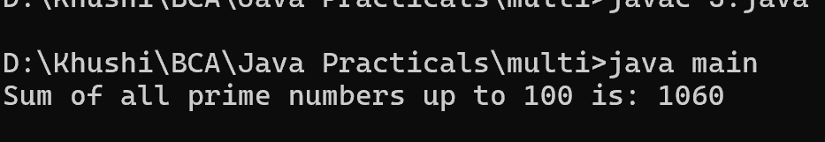

5. Write a Java program that calculates the sum of all prime numbers up to a given limit using multiple threads.
class main {
public static void main(String[] args) throws InterruptedException {
int limit = 100;
int numThreads = 4;
int range = limit / numThreads;
Thread[] threads = new Thread[numThreads];
final long[] partialSums = new long[numThreads];
for (int i = 0; i < numThreads; i++) {
final int start = i * range + 1;
final int end = (i == numThreads - 1) ? limit : (i + 1) * range;
threads[i] = new Thread() {
public void run() {
long sum = 0;
for (int j = start; j <= end; j++) {
if (isPrime(j)) {
sum += j;
}
}
partialSums[i] = sum;
}
};
threads[i].start();
}
for (Thread t : threads) {
t.join();
}
long totalSum = 0;
for (long partialSum : partialSums) {
totalSum += partialSum;
}
System.out.println("Sum of all prime numbers up to " + limit + " is: " + totalSum);
}
public static boolean isPrime(int num) {
if (num <= 1) return false;
for (int i = 2; i <= Math.sqrt(num); i++) {
if (num % i == 0) return false;
}
return true;
}
}
